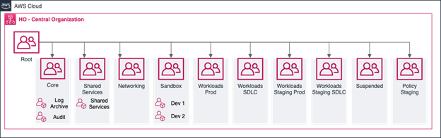
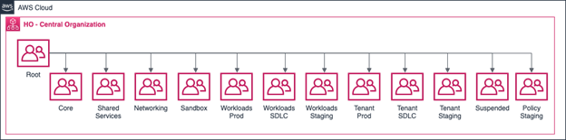

Organisational unit structure
This section is for Amazon Web Services (AWS) cloud users in the Home Office. This will be more important for Architects and stakeholders as organisational unit (OU) structure can affect the security of accounts.
This content explains:
- AWS organisations
- the proposed OU Structure within AWS organisations for the Home Office
- OU structure
- AWS Control Tower
Proposed OU Structure
The Public Cloud Team are planning to enable a range of AWS organisations features. This is to address concerns within the Home Office, especially around security and compliance. Important considerations include:
- Needs to be a flexible and scalable organisational unit (OU) structure to support a range of users and use cases
- The potential use of AWS Control Tower with different areas of the Home Office in the future
- Security guardrails
- Service Control Policies (SCP) are an organisation policy that is used to manage permissions within an organisation. SCPs are used to manage permissions within an organisation and can be applied against individual accounts, OUs, or across the whole of the organisation
Proposed OU Structure
OU explanations
Core OU
This OU is where the security and logging accounts are located. Within Control Tower Audit and Logging accounts are created as part of the solution. Access to accounts within this OU should be heavily restricted to authorised personnel only.
Shared services
This OU is where centralised shared services and the accounts that host them should be located. Accounts in this OU should provide centralised services across groups of accounts or the whole organisation. An example could be an account hosting a centralised backup solution.
Networking
This OU is where core networking functions and accounts hosting them will be located. Examples would be Transit Gateway, centralised external network connectivity, Direct Connect and centralised Amazon Virtual Private Cloud (VPC) endpoints.
Sandobox
This OU contains AWS accounts for developers, and they can use this to learn AWS cloud services. Accounts within this Sandbox OU are detached from other internal networks and operate in isolation to minimise blast radius. Accounts within the OU will be accessed through the console, CLI and API. Instances would be accessed through the use of AWS Systems Manager - Session Manager.
Workloads Prod
This OU is where centralised shared services and the accounts that host them should be located. Accounts in this OU should provide centralised services across groups of accounts or the whole organisation. An example could be an account hosting a centralised backup solution.
Workloads SDLC
This OU includes accounts used in the Software Development Lifecycle (SDLC). This includes pre-production, test and development environments. These accounts have full range of governance controls applied to them, including preventative guardrails. The benefit is that the same constraints apply across the whole SDLC. Without the potential to develop products that need to be further constrained as they go through environments. This will also be a staging environment for new preventative and detective guardrails. This will identify any effect before being applied to the production OU.
Workloads Staging Prod
This OU contains accounts that have a limited set of governance controls. Primarily focused on detective guardrails to monitor and report on compliance. A single set of guardrails can apply across all accounts hosting production workloads. This will be for accounts where the compliance position is not known or requires work to meet corporate guidance.
Workloads Staging SDLC
This OU contains all other accounts used in the SDLC where the compliance is not certain. The accounts have a limited set of governance controls. They focus on detective guardrails to monitor and report on compliance. This allows a single set of constraints across the whole SDLC. Without the potential to develop products that need to be further constrained as they go through environments. This OU will be as a staging area for new guardrails before being applied to the equivalent production OU.
Suspended OU
This OU will be used for all Sandbox accounts linked to employees who leave the Home Office. These accounts will be suspended when they are no longer required. Accounts placed in the OU should be tagged with where they came from for traceability. An SCP denying all actions should be applied against accounts in this OU.
Policy Staging OU
When making policy or structural changes to an AWS organisation it’s important to verify changes before applying them across the OU. The Policy Staging OU provides a way for administrators to test proposed changes to guardrails. They can then apply policies to verify the result in a safe and consistent manner. Once changes are understood and verified, a roll out strategy can be employed to slowly apply changes to the broader organisation.
Back to side navigationOU functions
Staging OUs
Staging OUs are for non-compliant accounts within the AWS organisation at the Home Office. The main difference between the standard OUs and staging OUs is the staging OUs do not include strict preventive or re-active guardrails. Both sets of OUs include the same set of detective guardrails.
We plan to split the structure to include standard and staging OU’s to reduce the influence of future controls. Standard OU’s are for new accounts that are expected to align to documented guardrails. Also, it will apply to existing accounts where changes need to be made to meet Home Office standards. We plan to implement staging OUs for existing accounts that are not compliant with Home Office guidance. Accounts will move to the standard OU's when they are compliant with Home Office standards. This starts with development, test and pre-production accounts to verify the results before production accounts are moved into the standard OU.
Tenant OUs
There is an option to implement tenant OUs. This would be for specific groups of accounts that have different requirements from the wider organisation. In this case a tenant OU could be created. Although this would be by exception and where there is a clear requirement for different guardrails such as SCPs.
AWS Control Tower
The Home Office may use Control Tower in the future within different areas of the Home Office. Therefore, our proposed OU structure has taken control tower into consideration. This is to simplify the transfer of accounts and mapping from the existing AWS organisations OU structure to Control Tower. It also means guardrails can be quickly mapped and implemented as accounts are transferred between the solutions.
As the Home Office looks to move services to AWS Control Tower there are certain limitations that should be noted. This may affect how the OU structure is implemented. Only top level OUs are accessible by and managed by AWS Control Tower. Guardrails can flow to nested OUs, but they cannot be managed directly by control tower. This has some potential effects on viewing the compliance of accounts in those nested OUs from the Control Tower console as they may be shown in a drift state.
Back to start of navigation treeBack to top